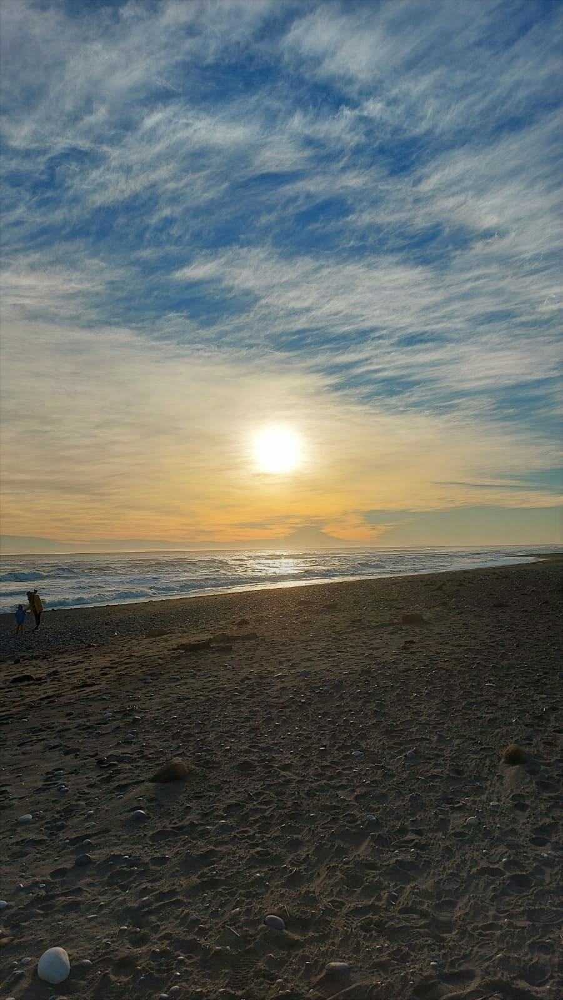
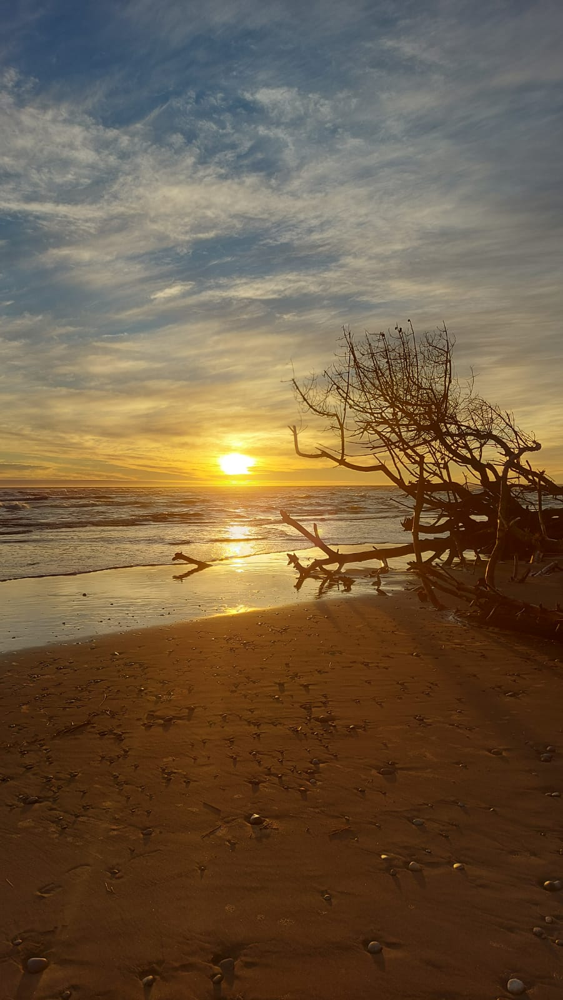
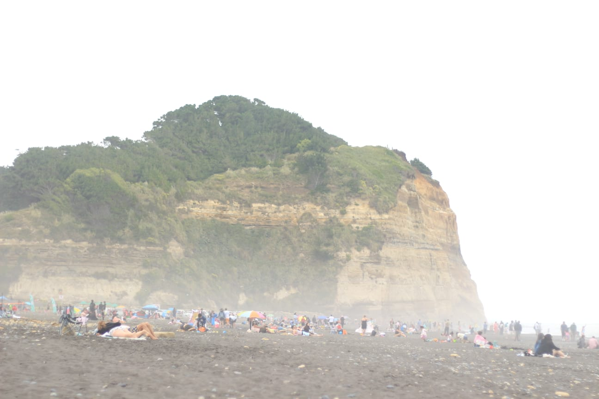
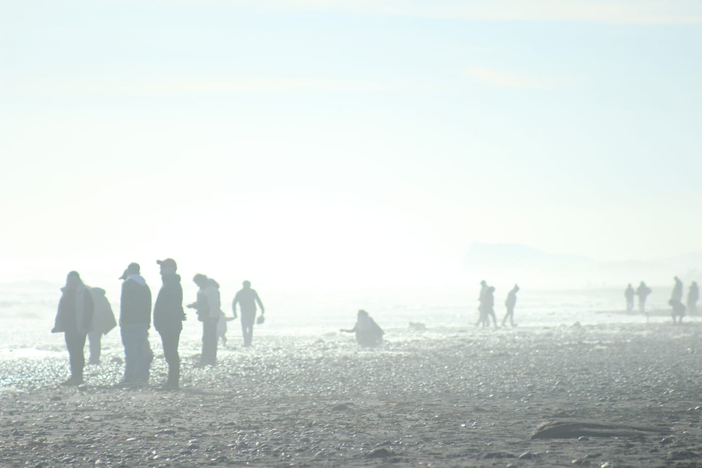
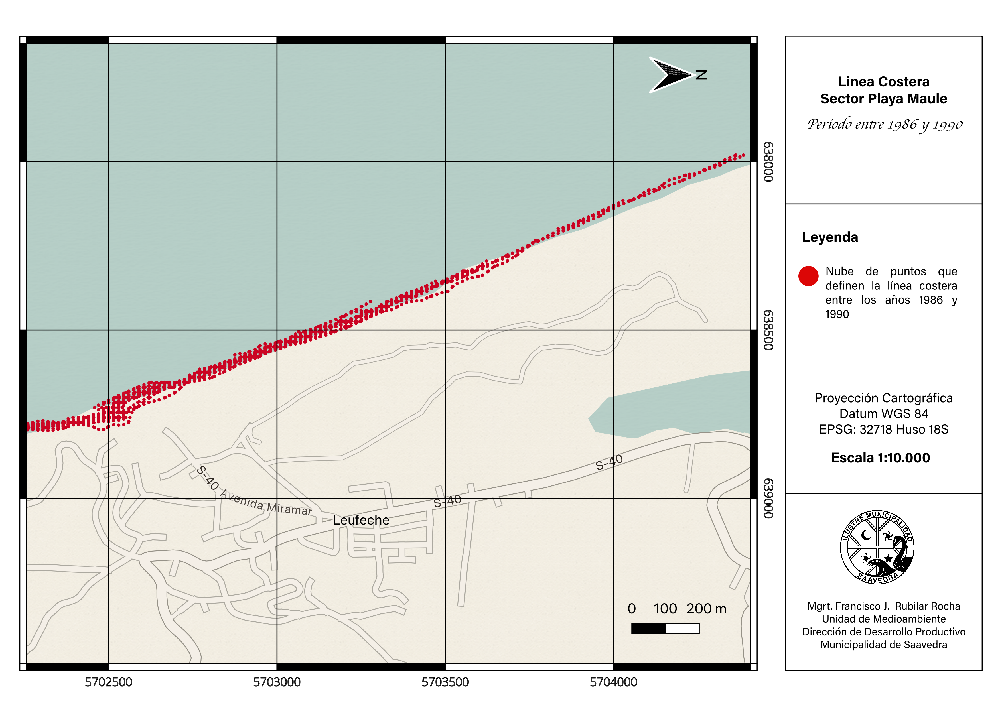
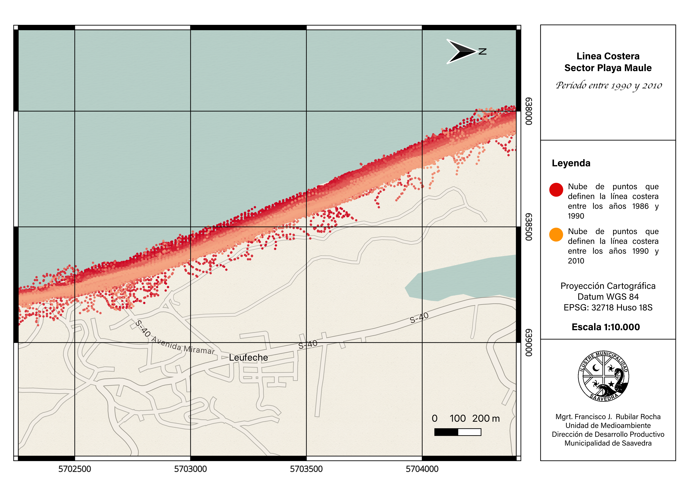
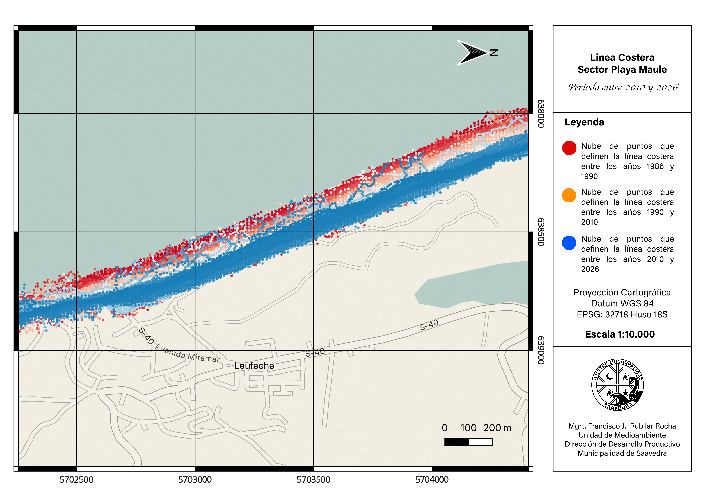
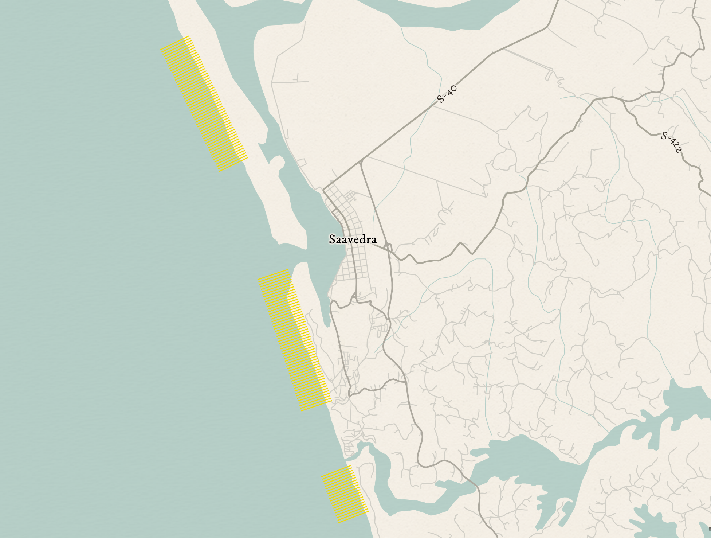
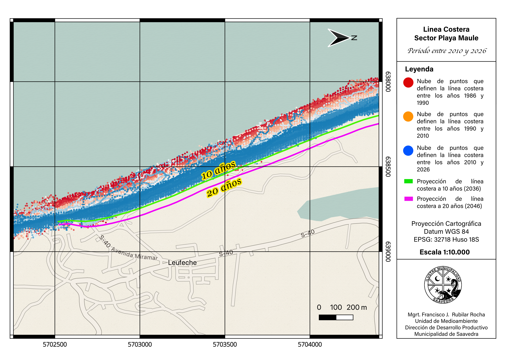

Capítulo I - Playa Maule y la “barra” Sur
Puerto Saavedra goza de una hermosa playa de 2,2 km llamada Playa Maule. Me gusta visitarla a menudo desde que vivo en esta ciudad. Es un espacio que te permite apreciar la inmensidad del mar, empaparte de su fuerza y calmar las angustias y tribulaciones en su entorno amable y poderoso.
 |
 |
| Playa Maule a media tarde, a 200 metros de Cerro Maule y el estacionamiento público. | Playa Maule al atardecer, a pocos metros de la barra Sur. |
Y su belleza no radica solo en el cliché del atardecer en el mar, que se cumple a cabalidad y de forma esplendorosa, sino que también la magia inunda con misterio los días nublados.
 |
| Playa Maule un día nublado, a 500 metros del Cerro Maule abrazando en su extensión a cientos de turistas |
 |
| Playa Maule en una tarde nublada. La neblina difumina a pocos metros las siluetas de los turistas. |
En Puerto Saavedra la gente sabe que la playa se está yendo. Lo dicen mis vecinos que han vivido aquí cuarenta años y recuerdan hasta dónde llegaba la arena - “…antes había un camino bajo el Cerro Maule de unos 80 metros don Francisco. Ese camino llegaba hasta Boca Budi y se conectaba hasta el Cerro La Mesa…” -
Bueno…, que la playa se esté yendo, significa que la línea costera está retrocediendo, y al menos a nivel local, ninguna institución había calculado la tasa de retroceso. La gente lo sabía, la playa, retrocedía, lo que no había (me salió verso sin esfuerzo), era un indicador para la toma de decisiones.
Esa ausencia no es un detalle académico. Sin una cifra, la erosión costera no entra en un instrumento de planificación, no justifica una obra de protección y no compite por presupuesto con problemas que sí están cuantificados. El diagnóstico territorial existe; el dato preciso, no.
Ahora existe: el sector de Playa Maule, frente al área poblada en Avenida Miramar, retrocede 4,36 metros por año. Acumulados sobre cuatro décadas, son unos 174 metros de playa perdidos.
Capítulo II - ¿Por qué no estaba medido?
En la revisión de antecedentes, encontré diversa información sobre la costa de Saavedra, y ninguna cuantifica el retroceso. Hay estudios geomorfológicos regionales (Peña-Cortés, 2014) que describen la costa de La Araucanía sin entregar tasas de cambio. Ledezma (2020) realizó, en el marco del proyecto FONDECYT 11180500, el primer estudio dedicado a interpretar geológicamente los procesos de remoción en masa en la zona de Puerto Saavedra, incluyendo el primer mapa de susceptibilidad para el sector, aunque acotado a procesos de ladera puntuales sin proyección hacia el retroceso de la línea de costa.
Tampoco hay informes de organismos de emergencia que cuantifiquen el proceso y la intervención institucional se limita a alertas operativas por marejadas.
En el propio Plan de Acción Comunal de Cambio Climático de Saavedra, reconocemos la erosión del borde costero como riesgo comunal, pero en su diseño no se pudo cuantificar las cadenas de impacto por falta de información local de base. Este levantamiento viene a resolver esta brecha.
Capítulo III - ¿Cómo se mide una playa desde el espacio?
Cuando “vemos” un paisaje, en realidad vemos la luz del sol que ese paisaje refleja. Nuestros ojos son sensores que “captan” la luz que les llega de rebote al chocar, literalmente, con todo lo que alcanza nuestra vista. Y esa luz le da texturas y colores a las cosas con las que interactúa. Luego, nuestro cerebro interpreta esa información de texturas y colores y nos permite discriminar en un paisaje lo que es un árbol, lo que es una piedra, lo que es agua y lo que es suelo. Los satélites hacen lo mismo, pero con unos SUPER OJOS, que les permiten “ver” el calor que emiten los objetos de la superficie e incluso el nivel de clorofila en un predio forestal. Y con esa supervista, los satélites, a kilómetros sobre el suelo pueden discriminar MUCHAS más cosas que nuestros ojos, en todo el espectro de colores visibles invisibles a la retina humana (llamadas bandas electromagnéticas). El siguiente video es una de los diversos resultados y productos obtenidos del procesamiento satelital. Ojito, que hay varias transiciones que generan saltos intermitentes de luz blanca por las nubes y correcciones de imagen. Estas podrían generar reacciones no aptas para personas con epilepsia.
El agua y la arena reflejan la luz de forma muy distinta en el infrarrojo de onda corta: el agua absorbe casi toda esa energía y aparece oscura, mientras la arena seca, la refleja. Combinando esa banda con la del verde se obtiene un índice, el MNDWI, que separa ambas superficies con nitidez, y el límite entre las dos es la línea de costa.
Lo que hace interesante el ejercicio no es medir una vez, sino medir muchas. El archivo satelital abierto de la NASA y el Servicio Geológico de Estados Unidos cubre la costa chilena desde 1986 de forma continua, y el proyecto Copernicus lo complementa desde 2015 con mayor resolución. Son cuatro décadas de fotografías del mismo lugar, tomadas cada dos semanas, disponibles sin costo.
El levantamiento procesó 2.899 imágenes de cinco misiones satelitales, de las que obtuve 1.457 posiciones válidas de la línea de costa. Cada posición se mide con precisión subpíxel, mejor que el tamaño nominal de la celda de 30 metros, mediante interpolación del índice espectral.
Para cada una de esas 1457 líneas de costa válidas, extraje las nubes de puntos para cada una y luego las representé en las siguientes cartografías en 3 intervalos de tiempo que permiten visualizar las variaciones a simple observación.



Capítulo IV - Resultados
No basta con diseñar estas lindas cartografías para representar los datos generados, sino que, para tomar las decisiones, es necesario un análisis estadístico y de esta manera obtener los tan anhelados indicadores que necesitamos para relevar el riesgo y comenzar a apalancar recursos.
| Sector | Transectos | Tasa media | R² | Cambio acumulado |
|---|---|---|---|---|
| Barra Norte | 53 | −0,02 m/año | 0,00 | ≈ 0 m |
| Playa Maule | 54 | −4,36 m/año | 0,81 | −174 m |
| Sur Boca Budi | 20 | −2,14 m/año | 0,53 | −86 m |
Para obtener los valores de avance y retroceso de la línea costera, se debe comparar el “cambio” entre el suelo y el agua respecto a una referencia, que para este caso, resulta en una curva dibujada manualmente, con resolución subpíxel a partir de una imagen satelital despejada sin nubes y corregida. De los cientos de puntos que conforman esta curva, se desprenden los “transectos”, que serán rectas de 600 metros y exactamente perpendiculares a la costa, que están separadas por 50 metros cada una, tal como se muestra en la siguiente figura. Los valores de avance y retroceso entonces serán, las distancias que recorrerá la costa en cada transecto. De esta manera, los indicadores de variación de la línea costera se obtienen cada 50 metros y con eso, ya podemos interpretar y sectorizar. Es importante mencionar, que hay una zona en la que no dibujé transectos, que corresponde a la barra norte de la desembocadura. Esto se justifica, pues el fenómeno de migración de la desembocadura causa “ruido” en el análisis del retroceso de la línea de costa en el sector poblado de playa Maule. En el siguiente post incorporo ese fenómeno, para quienes queden “curiosos” y “chúcaros” de esa información.

De los 127 transectos analizados, 74 presentan erosión significativa, 53 se mantienen sin tendencia neta y ninguno registra avance de la línea de costa.
La diferencia entre el norte y el sur de Cerro Maule es tan marcada que conviene mirarla en detalle. En Playa Maule el orden cronológico es la firma de un desplazamiento sostenido, y explica el R² de 0,81. Al norte, en cambio, el R² de 0,00 no significa que no pase nada, significa que lo que pasa no tiene dirección. La costa se mueve, pero vuelve.
Cerro Maule opera como divisoria entre dos celdas litorales distintas. El promontorio rocoso interrumpe el transporte de sedimento a lo largo de la costa, y lo que ocurre a un lado no se transmite al otro. Además, la desembocadura del Río Imperial produce transporte de sedimento de la barra sur a la barra norte. Para la gestión ambiental y del riesgo del desastre esto importa mucho. Cualquier obra de protección diseñada para Playa Maule no puede suponer que la barra norte se comporta igual, y tampoco puede ignorar que intervenir un punto de la celda podría transferir un incidente al resto.
Hay un segundo patrón dentro de Playa Maule. Los ocho transectos de mayor retroceso son consecutivos y están próximos a la desembocadura del río Imperial (barra sur), con tasas de entre 5,3 y 5,9 metros por año. Esa concentración no es casual, y es el tema de un segundo análisis dedicado a la migración de la desembocadura que publicaré por separado.
Capítulo V - Proyecciones
Extrapolando la tendencia medida hacia el futuro, Playa Maule perdería otros 43,6 metros de playa en diez años y 87,1 en veinte. En el escenario desfavorable, que considera el límite superior del rango de retroceso, esas cifras suben a 62 y 123,9 metros.

Conviene ser claro y tener precaución sobre qué es esto. Es una extrapolación de la tendencia medida, no un pronóstico. No incorpora una posible aceleración por ascenso del nivel del mar, no considera cambios en el aporte de sedimento de las desembocaduras vecinas, y no captura el efecto de eventos extremos puntuales que pueden producir retrocesos muy superiores a la tendencia media en pocos días.
Dicho eso, la proyección de Playa Maule es la más confiable de las tres justamente porque su tendencia histórica es la más consistente. Un R² alto determina una pendiente bien acotada y, por tanto, un intervalo de proyección estrecho.
Limitaciones
Estos resultados son preliminares y falta aplicar la corrección por nivel de marea. Una línea de costa detectada con marea alta aparece más retraída que la misma costa con marea baja, y esa diferencia se suma como ruido a la serie. La corrección está en ejecución y se espera que modifique las magnitudes sin alterar la dirección ni el orden de magnitud de las tendencias.
Hay además un vacío de cobertura satelital entre 1988 y 1997, por limitaciones históricas de recepción de datos en Sudamérica. Recalculando las tasas sin el período previo al vacío, la variación es de 0,06 metros por año en el sector crítico, de modo que la tendencia es robusta a ese hueco.
Reproducibilidad
Todo el levantamiento se ejecutó con datos de acceso abierto y herramientas gratuitas. Eso tiene una consecuencia práctica que va más allá de este resultado, el municipio puede actualizar la serie cada año sin depender de consultoría externa, con resolución espacial de 50 metros a lo largo de todo el litoral comunal.
El reporte ejecutivo completo, con metodología detallada, control de calidad y apéndice cartográfico, está disponible en el siguiente enlace:
Reporte retroceso de la línea costera en la comuna de Saavedra
Apéndice de cartografías y gráficas
Los códigos de procesamiento y las capas geoespaciales los puedo compartir con una solicitud a mi correo electrónico fcorubilarrocha@gmail.com
Todo lo relacionado al procesamiento satelital, automatización mediante Python de geoprocesos ráster y dibujo de la línea costera, fue ejecutado según la literatura que he estudiado en mi carrera profesional. Revisa mis referencias a continuación:
Gorelick, N., Hancher, M., Dixon, M., Ilyushchenko, S., Thau, D. y Moore, R. (2017). Google Earth Engine: Planetary-scale geospatial analysis for everyone. Remote Sensing of Environment, 202, 18–27. https://doi.org/10.1016/j.rse.2017.06.031
Himmelstoss, E. A., Henderson, R. E., Kratzmann, M. G. y Farris, A. S. (2018). Digital Shoreline Analysis System (DSAS) version 5.0 user guide. U.S. Geological Survey Open-File Report 2018-1179. https://doi.org/10.3133/ofr20181179
Martínez, C., Winckler, P., Agredano, R., Esparza, C., Torres, I. y Contreras-López, M. (2022). Coastal erosion in sandy beaches along a tectonically active coast: The Chile study case. Progress in Physical Geography: Earth and Environment, 46(2), 250–271. https://doi.org/10.1177/03091333211057194
Vos, K., Splinter, K. D., Harley, M. D., Simmons, J. A. y Turner, I. L. (2019). CoastSat: A Google Earth Engine-enabled Python toolkit to extract shorelines from publicly available satellite imagery. Environmental Modelling & Software, 122, 104528. https://doi.org/10.1016/j.envsoft.2019.104528